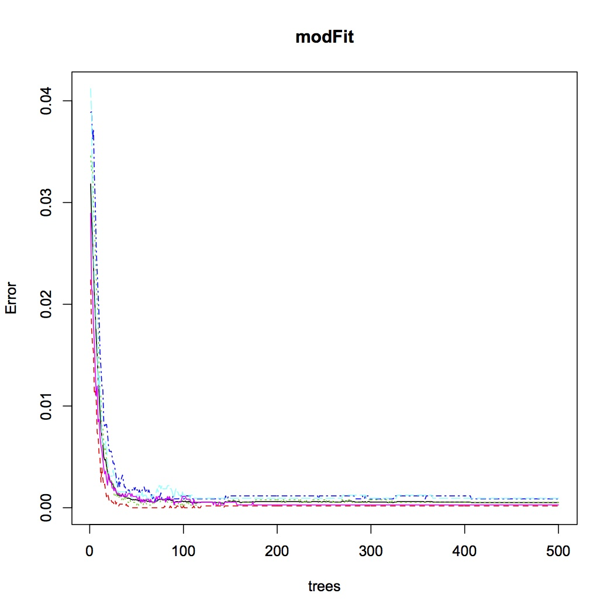
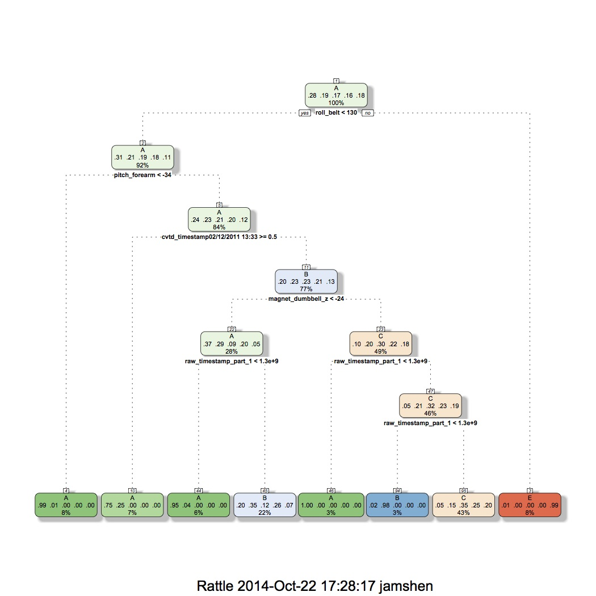

Welcome to Practical Machine Learning Project Report Page
by James Shen
Overview
The goal of this project is to predict the manner in which people did exercise. This is the “classe” variable in the training set. All other variables can be used to predict “classe”.
There are four parts in this project report:
1. Model Build
2. Cross Validation
3. Expected Sample Error
4. Results for Test Cases
Model Build
>setwd("/Users/jshen/MachineLearning/project")
>library(lattice)
>library(ggplot2)
>library(caret)
>library(ElemStatLearn)
>library(randomForest)
>library(rpart)
>trainData = read.csv("pml-training.csv")
>testData = read.csv("pml-testing.csv")
>set.seed(23)
>colDrops <- c(
"kurtosis_roll_belt",
"kurtosis_picth_belt",
"kurtosis_yaw_belt",
"skewness_roll_belt",
"skewness_roll_belt.1",
"skewness_yaw_belt",
"max_yaw_belt",
"min_yaw_belt",
"amplitude_yaw_belt",
"avg_roll_arm",
"stddev_roll_arm",
"var_roll_arm",
"avg_pitch_arm",
"stddev_pitch_arm",
"var_pitch_arm",
"avg_yaw_arm",
"stddev_yaw_arm",
"var_yaw_arm",
"kurtosis_roll_arm",
"kurtosis_picth_arm",
"kurtosis_yaw_arm",
"skewness_roll_arm",
"skewness_pitch_arm",
"skewness_yaw_arm",
"max_roll_arm",
"min_roll_arm",
"min_pitch_arm",
"amplitude_roll_arm",
"amplitude_pitch_arm",
"kurtosis_roll_dumbbell",
"kurtosis_picth_dumbbell",
"kurtosis_yaw_dumbbell",
"skewness_roll_dumbbell",
"skewness_pitch_dumbbell",
"skewness_yaw_dumbbell",
"max_yaw_dumbbell",
"min_yaw_dumbbell",
"amplitude_yaw_dumbbell",
"kurtosis_roll_forearm",
"kurtosis_picth_forearm",
"kurtosis_yaw_forearm",
"skewness_roll_forearm",
"skewness_pitch_forearm",
"skewness_yaw_forearm",
"max_roll_forearm",
"max_yaw_forearm",
"min_roll_forearm",
"min_yaw_forearm",
"amplitude_roll_forearm",
"amplitude_yaw_forearm",
"avg_roll_forearm",
"stddev_roll_forearm",
"var_roll_forearm",
"avg_pitch_forearm",
"stddev_pitch_forearm",
"var_pitch_forearm",
"avg_yaw_forearm",
"stddev_yaw_forearm",
"var_yaw_forearm",
"problem_id")
>training <- trainData[, !(names(trainData) %in% colDrop)]
>testing <- testData[, !(names(testData) %in% colDrop)]
Build Random Forest Model
>modFit <- randomForest(classe ~ ., data = training, importance = T)
Build RPART Model
>modFitV1 <- train(classe ~., method="rpart", data= training)
Cross Validation
Random Forest Model
RPART Model
Expected Sample Error
Random Forest Model
Call:
randomForest(formula = classe ~ ., data = training, importance = T)
Type of random forest: classification
Number of trees: 500
No. of variables tried at each split: 7
OOB estimate of error rate: 0.05%
Confusion matrix:
| A | B | C | D | E | class.error | |
| A | 5579 | 1 | 0 | 0 | 0 | 0.0001792115 |
| B | 2 | 3795 | 0 | 0 | 0 | 0.0005267316 |
| C | 0 | 2 | 3419 | 1 | 0 | 0.0008766803 |
| D | 0 | 0 | 2 | 3213 | 1 | 0.0009328358 |
| E | 0 | 0 | 0 | 1 | 3606 | 0.0002772387 |
RPART Model
19622 samples
55 predictor
5 classes: 'A', 'B', 'C', 'D', 'E'
No pre-processing
Resampling: Bootstrapped (25 reps)
Summary of sample sizes: 19622, 19622, 19622, 19622, 19622, 19622, ...
Resampling results across tuning parameters:
| cp | Accuracy | Kappa | Accuracy SD | Kappa SD |
| 0.0402 | 0.516 | 0.3749 | 0.0833 | 0.127 |
| 0.0457 | 0.431 | 0.2337 | 0.0845 | 0.140 |
| 0.1152 | 0.333 | 0.0743 | 0.0413 | 0.062 |
Accuracy was used to select the optimal model using the largest value.
The final value used for the model was cp = 0.04023643.
Results for Test Cases
Random Forest Model
1 2 3 4 5 6 7 8 9 10 11 12 13 14 15 16 17 18 19 20
B A B A A E D B A A B C B A E E A B B B
Levels: A B C D ERPART Model
[1] B A C C A C C C A A C C B A C C C B B B
Levels: A B C D E